The Noise Measured by Back-illuminated Silicon Sensors
Roy T. Smart1, Charles C. Kankelborg1, and Jacob D. Parker2
1Montana State University
2NASA/GSFC
OpTeC 2025
October 9th, 2025
Hi everyone, thanks for joining me.
Today I’d like to talk about some work that we did on modeling the noise measured by back-illuminated silicon imaging sensors that are often used in astronomy.
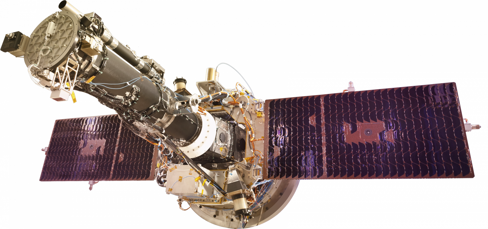
IRIS Noise Discrepancy
Interface Region Imaging Spectrograph (IRIS)
Ultraviolet (UV) solar spectrograph
Built and operated with the help of MSU
IRIS CCDs measure less noise than predicted
UV photon transfer curve is too steep
Expected slope ratio > 2
Measured slope ratio = 1.5
SNR is ~25% better than expected
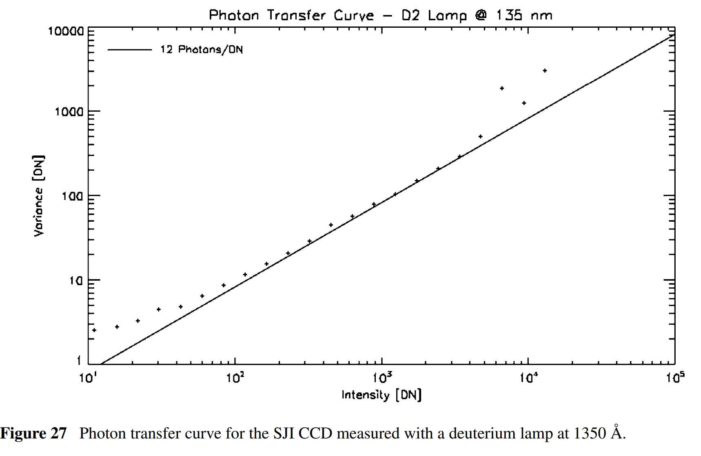
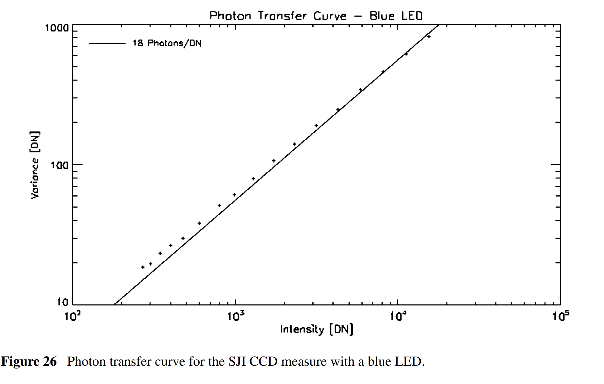
Wülser et al. (2018)
And I’d like to begin with a bit of a mystery.
The Interface Region Imaging Spectrograph, or IRIS, is a NASA satellite that’s currently observing the Sun in ultraviolet, and its optics actually were tested here at MSU.
IRIS uses back-illuminated CCDs to detect light and, during ground testing, the IRIS team used these sensors to measure the variance of a flat field as a function of its intensity for both blue light, here in the upper right, and ultraviolet light at 135 nm, in the lower right.
These plots are known as photon transfer curves and they are a direct measurement of the noise intrinsic to an imaging system.
The slope of a photon transfer curve is the gain, and from theoretical considerations, the IRIS team expected that the gain in blue would be twice as large as the gain in ultraviolet, but these curves show it being only about 1.5 times greater.
This is actually good news, since it implies that the signal-to-noise ratio of IRIS is better than predicted by about 25%, but it is also slightly problematic since we don’t understand why.
HST/WFC3 Noise
Wide Field Camera 3 (WFC3) on Hubble
Ultraviolet imager
Also measures less noise
PTC slope ratio
Expected ~1.7 @ 200 nm
Measured 1.09 @ 200 nm
SNR is ~25% better than expected
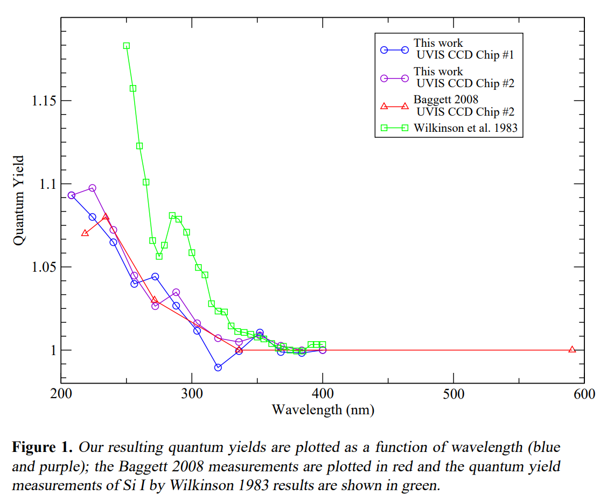
Marinelli & Green (2024)
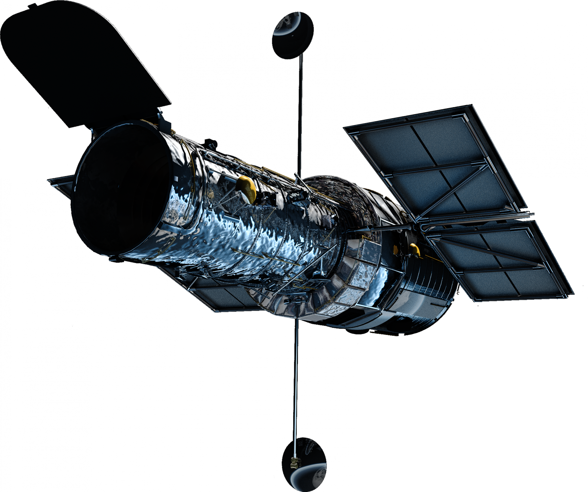
This problem isn’t unique to IRIS either, the Wide Field Camera 3, or WFC3 on the Hubble Space Telescope, which uses very similar CCDs to IRIS, also experiences this issue.
Plotted on the right in blue, purple, and red is WFC3 team’s measurement of the same gain ratio I was discussing on the previous slide.
In this case, they expected the gain ratio to be about 1.7 at 200 nm, but they measured it to be only 1.1.
This discrepancy corresponds to an SNR improvement of about 25% compared to theoretical expectations, which is the same improvement observed with IRIS.
The goal of this presentation is to develop a simple model which can explain these discrepancies observed by the IRIS and WFC3 teams.
Outline
Signal (Stern et al. 1994)
Absorbance
Quantum yield
Charge-collection efficiency
Noise
Simple noise model (Stern et al. 1986)
Improved noise model
Shot noise
Fano noise
Partial charge collection noise
Charge Spreading
Results
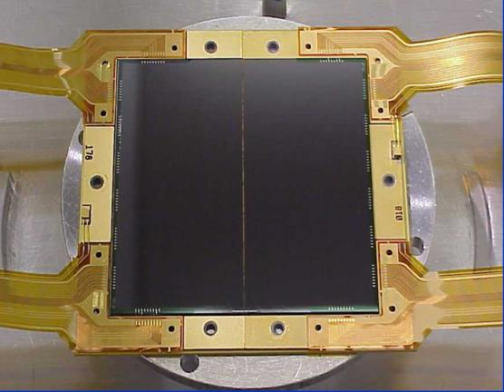
Detector package similar to the WFC3/UVIS flight detector.
And here’s an outline of how we’ll do it.
We’ll start by developing a model of the signal measured by back-illuminated silicon sensors that has three factors: absorbance, quantum yield, and charge-collection efficiency.
Next, we’ll discuss two noise models, a simple noise model which considers only shot noise and an improved noise model which considers shot noise, Fano noise, and noise due to partial charge collection.
Additionally, we’ll investigate the role of charge spreading to see if it can explain the observed discrepancy.
Finally, we’ll use our model to predict the noise measured by IRIS and WFC3, as well as use it to make predictions about the noise measured by other ultraviolet astronomical observatories.
Signal
Alright, so the signal measured by silicon sensors is well-studied.
In this presentation we’ll use a model introduced by Stern et al. (1994), but adapted to recent measurements.
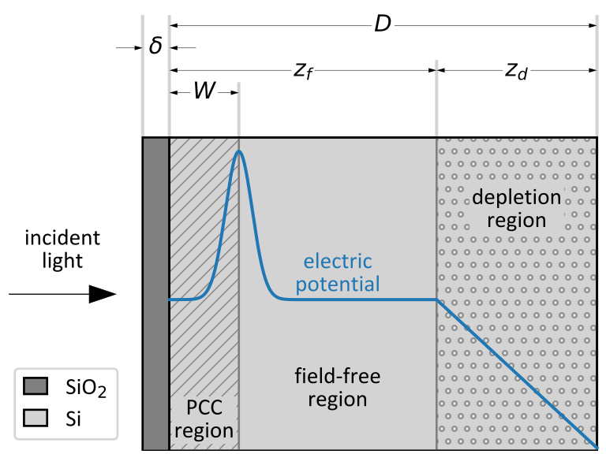
Back-illuminated Sensor Model
Thin layer of silicon dioxide (~1 nm)
Light-sensitive silicon (16 μm)
Partial charge collection (PCC) region (~100 nm)
Field-free region
Depletion region (8 μm)
Here is a schematic showing the geometry of our sensor model.
We will consider the light-sensitive layer to be a 16-um-thick slab of silicon coated in a thin layer of silicon dioxide.
The light sensitive layer consists of three parts: the partial charge collection region, the field free region, and the depletion region, which will be explained in later slides.
We will consider most of these thicknesses to be free parameters which will be fit to measurements we’ll show later.
Absorbance
Energy absorbed by light-sensitive layer
Reflections from each interface
Oxide absorption
Transmittance through entire sensor
Computed using standard optical constants
Henke et al. (1993)
Palik (1997)
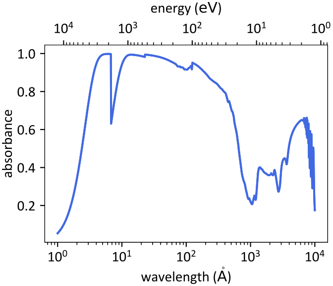
The first factor we will consider in our signal model is the absorbance of the light-sensitive layer.
This is the fraction of incident energy absorbed by the silicon, and it is reduced by reflections from each interface, absorption in the oxide layer, or by penetrating all the way through the sensor.
For this work we computed the absorbance using the standard optical constants and the theory of thin films.
Here on the right is a plot of the absorbance we used.
Notice that it is relatively low in the ultraviolet due to absorption by the oxide layer.
Quantum Yield
Quantum yield (QY) is the number of electron-hole pairs generated per photon
QY increases as photon energy increases
Ramanathan & Kurinsky (2020) QY model
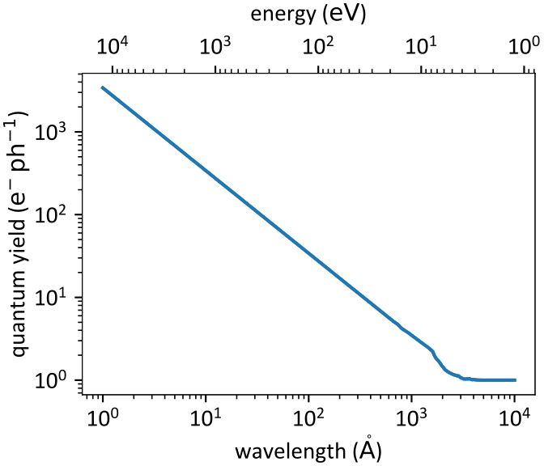
The next factor in our signal model is the quantum yield, or the number of electron-hole pairs generated per absorbed photon due to the photoelectric effect.
The quantum yield increases as the energy of the photon increases, and at high energies the quantum yield is approximately equal to the energy of the photon divided by 3.65eV.
For this work, we’ll use the Ramanathan & Kurinsky (2020) quantum yield model which is a tabulated model that is more accurate for low-energy photons
Partial Charge Collection
Photons are absorbed according to the Beer-Lambert law (red)
Photons absorbed in PCC region lose some electrons
Charge-collection efficiency (CCE) is the fraction of charge measured.
Piecewise-linear differential CCE introduced by Stern et al. (1994)
Denoted
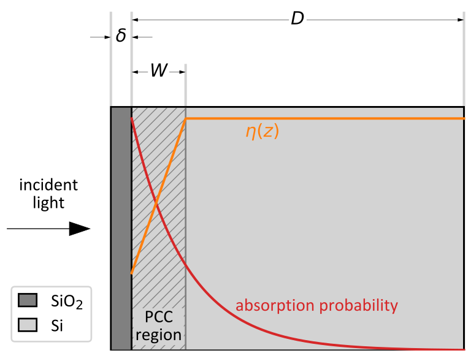
The last thing to consider for our signal model is that the back-thinning process used to manufacture these sensors damages the silicon crystal lattice and creates dangling bonds that cause the electron-hole pairs to recombine before they can be measured.
This phenomenon is known as partial charge collection, or PCC, and it can be the dominant factor in the signal model.
Partial charge collection is quantified using the charge-collection efficiency, or CCE, the fraction of charges that survived to be measured by the sensor.
In this work, we’ll model the CCE using a piecewise-linear function of depth, denoted eta z, that increases linearly from some minimum value to 1 over the extent of the PCC region and then remains at 1 through the rest of the sensor.
Average Charge-Collection Efficiency
Integrate Beer-Lambert law against
Average fraction of electrons that survived to be measured
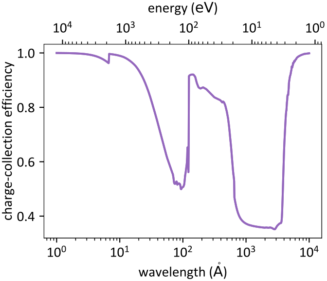
We can integrate this depth-dependent CCE against the Beer-Lambert law to find the last factor in our signal model: the average charge collection efficiency.
This is the average fraction of electrons that did not recombine and were measured by the sensor.
Quantum Efficiency
Quantum Efficiency (QE) is the factor used to convert from incident photons to measured electrons
Product of absorbance, quantum yield and CCE
Allowed to be larger than one!
We can put all this together to find the quantum efficiency, or QE, the average number of electrons measured per incident photon.
The QE is equal to the product of the absorbance, quantum yield, and CCE and it is a common metric of sensor performance.
Despite its name, the quantum efficiency is allowed to be larger than 1 since the quantum yield is unbounded.
Effective Quantum Efficiency (EQE)
Measured quantity
Compare sensor to NIST photodiode
Between 0 and 1
Often used to compute QE
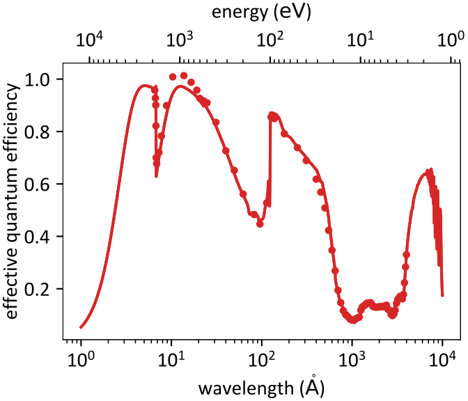
Because of this, we often use another quantity known as the effective quantum efficiency, or EQE, which ignores the quantum yield and is just the product of the absorbance and the CCE.
This quantity is guaranteed to be between 0 and 1, and this is what’s usually measured when calibrating a sensor.
In this work, we fit our model to EQE measurements to constrain the free parameters we discussed previously.
Noise
Ok, with the signal model in place we’re now ready to discuss our noise model.
Variance-to-mean ratio
Convenient measure of noise
If is Poisson-distributed,
Constant vs. signal, unlike SNR
Equal to the slope of the photon-transfer curve
But before we do, we need to introduce the variance-to-mean ratio, or VMR, which is the ratio of the variance of some random variable to its mean.
We will find that measuring the noise using the VMR is more convenient than the SNR since it’s constant as a function of signal for the distributions we’ll discuss here.
For example, the VMR of a Poisson-distributed random variable is 1 since its variance and mean are equal.
The VMR is also equivalent the slope of the photon transfer curve we were discussing earlier, so expressing the noise in this way will be helpful when comparing our predictions to IRIS and WFC3.
Simple Noise Model
Used by IRIS and WFC3
Number of measured photons proportional to EQE
All-or-nothing charge collection
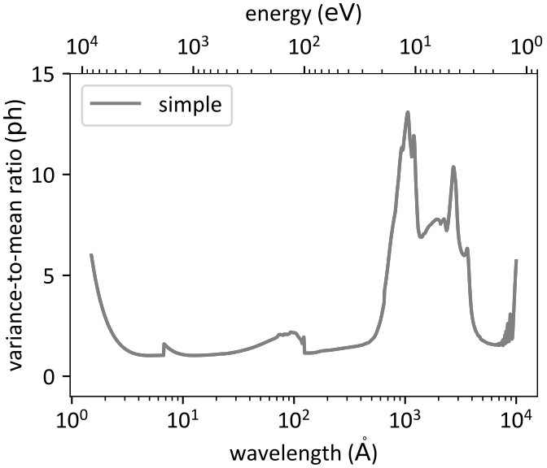
Ok, the first noise model we’ll discuss is the model used by the IRIS and WFC3 teams.
We’ll call this the simple model, since we’ll be improving this model in later slides.
In this model, the expected number of measured photons is proportional to the effective quantum efficiency.
This is equivalent to an all-or-nothing charge collection model, where either all the electrons are measured or none of them are.
Since these photons are Poisson-distributed, the VMR of the measured photons is 1 as promised, but this is internal to the sensor.
The VMR of this noise in terms of the incident photons ends up being 1 divided by the EQE, which is plotted here on the right.
Expressing the noise in this way is helpful since it tells us how much noise to expect for a given number of incident photons.
An Improved Noise Model
Shot noise
Fano noise
Inherent randomness in the charge-generation process
PCC noise
Uncertain CCE due to random absorption depth
So, to fix the discrepancies that the IRIS and WFC3 teams observed with the simple model, we propose an improved model that considers two additional sources on top of the shot noise: Fano noise and PCC noise.
Fano noise is due to the inherent uncertainty in the charge generation process and it is a well known-effect that has been studied extensively.
As we will see, including Fano noise does not explain the discrepancy observed by IRIS and WFC3 since it can only increase the noise, but we will include it so that our model is as accurate as possible.
PCC noise is a relatively less-studied noise source which is due to variance in the charge collection efficiency.
In this work, we propose that PCC noise might explain the discrepancy observed by IRIS and WFC3.
Shot Noise
Absorbed photons are Poisson-distributed
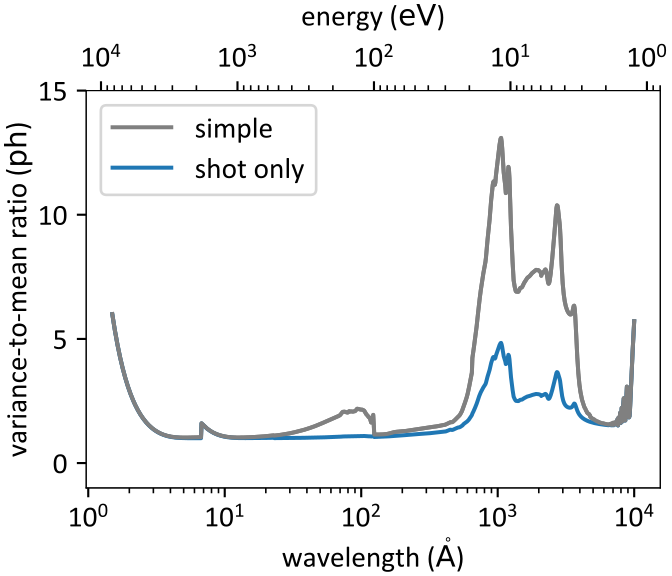
The first term in our noise model is the shot noise and it is proportional to the number of photons absorbed by the light sensitive layer.
Again, the internal VMR of this process is 1 since it’s a Poisson distribution, but in terms of the external, incident photons the VMR is 1 on the absorbance, which is plotted here in blue.
We can see that this noise source is much smaller than the simple model since we have not considered PCC yet.
Fano Noise
Quantum yield uncertainty
Described by Fano factor
Ramanathan & Kurinksy (2020) QY model
Small compared to other noise sources
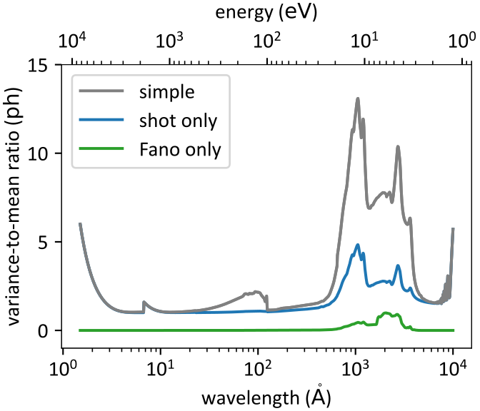
The next term in our noise model is the Fano noise, which is the uncertainty in the quantum yield.
The Fano noise is characterized by a Fano factor, which is the VMR of the quantum yield, and it is commonly accepted to have a value of about 0.1.
As we mentioned before, this work uses the Ramanathan and Kurinsky quantum yield model which we used to estimate the Fano factor over our entire wavelength range.
We’ve plotted the Fano noise here in green and we can see that it’s very small compared to the shot noise.
PCC Noise
Since each photon is absorbed at a different depth, each experiences a different CCE.
Each electron has a chance of being absorbed
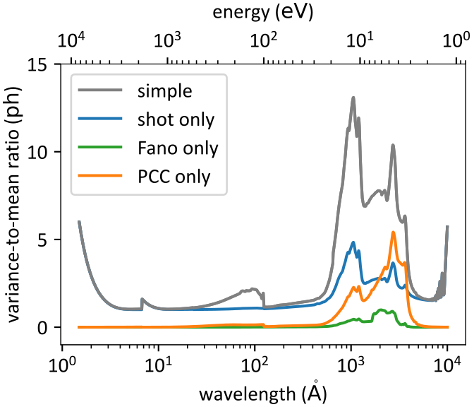
The final term in our noise model is the PCC noise, which is due to the depth dependence of the charge-collection efficiency.
We consider the uncertainty in the CCE as a new noise source which has significant effects on the total noise.
We will model this noise as an independent binary choice on each electron, where the probability of measurement is determined by the CCE at that depth.
We’ve plotted the VMR of this process in orange, and we can see that it is the dominant noise source in the near ultraviolet.
Penetration depth
Some ultraviolet wavelengths have a penetration depth smaller than the PCC region
~40 – 100 A
~500 – 4500 A
PCC noise is important in these regions
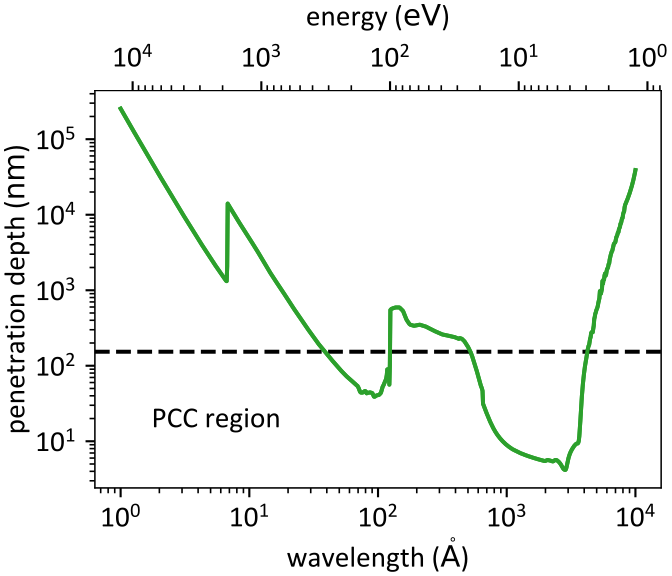
To understand this better, here is a plot of the silicon penetration depth, in green, compared to the thickness of the PCC region, shown as a dashed line.
The PCC region is very thin, only about 100 nm, and yet there are two bands in the ultraviolet where the penetration depth is less than the thickness of the PCC region.
In these bands, considering PCC noise is important since recombination is probable in these regions.
Total Noise
Sum of shot, Fano, and PCC noise
VMR of improved model is smaller than the simple model in the UV
Shallow penetration depth
The partial events improve the noise performance
More photons are detected
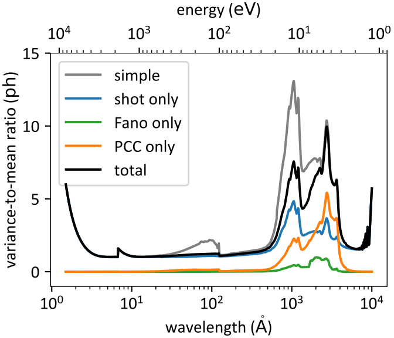
Ok, to put it all together and find the total noise predicted by our model, we simply sum the contribution from the three noise sources we just discussed.
We’ve plotted the total noise in black, and we can see that it predicts less noise than the simple model in the ultraviolet, where the penetration depth is less than the thickness of the PCC region.
It may seem paradoxical to add a new noise source and measure less noise, but it’s because more photons were detected, albeit only partially.
SNR improvement
SNR improves by up to compared to the simple model
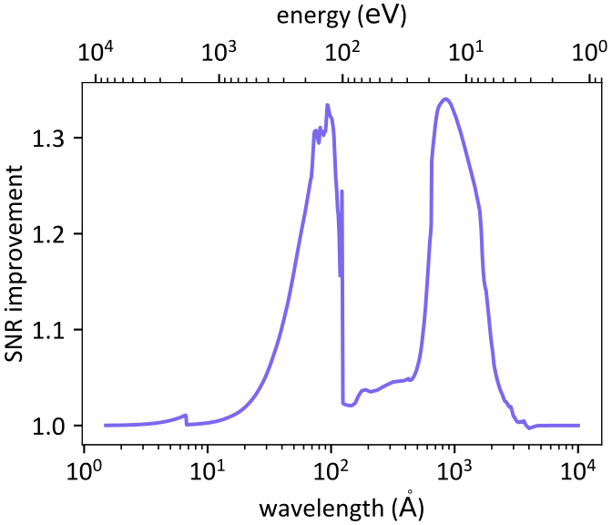
We can determine the SNR improvement compared to the simple model by taking the square root of the ratio of the simple VMR to the total VMR.
This shows that the SNR could be up to 30 percent better than expected in the two ultraviolet bands where the penetration depth is less than the thickness of the PCC region.
This is obviously good news for engineers building ultraviolet instruments since the sensor has much better performance than anticipated in these wavelengths.
Charge spreading?
Charge spreading is when electrons diffuse into adjacent pixels.
Proportional to size of field-free region
Could explain the discrepancy since this increases the correlations between pixels
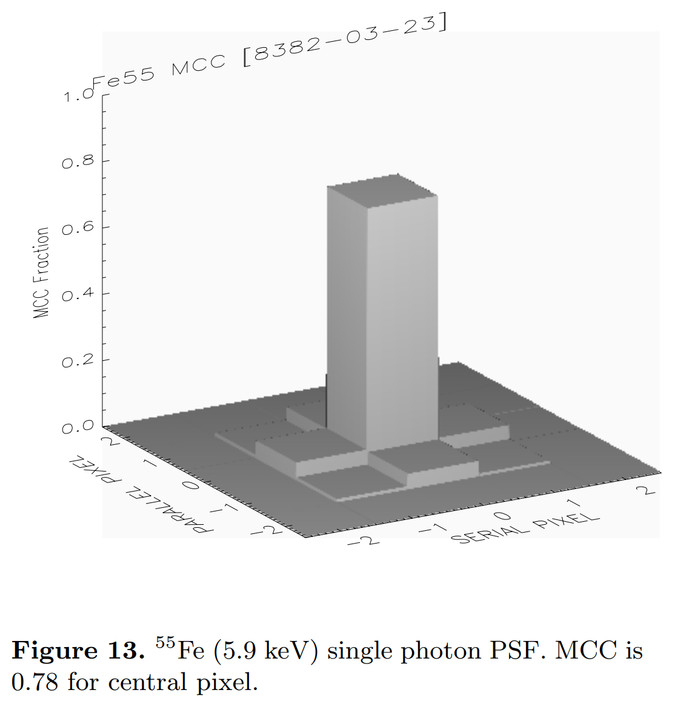
Stern et al. (2003)
Another effect which plays a role in the measured noise is charge spreading, or the tendency of photoelectrons to migrate into neighboring pixels.
This effect blurs the image captured by the sensor and decreases the noise since it introduces correlations between adjacent pixels.
Both the IRIS and the WFC3 teams proposed charge spreading to explain the discrepancies they observed, so we investigated to see how it influenced the results of our study.
Charge Spreading Model
Janesick (2001) charge spreading model
Stern et al. (2004) measurements
Fit size of field-free region
Predicts a similar amount of charge spreading for both UV and visible light
Cannot explain IRIS and WFC3 discrepancies
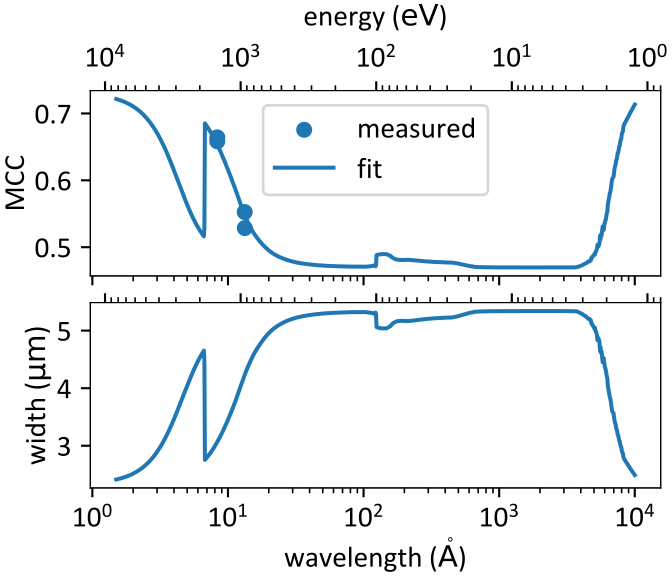
To estimate the magnitude of this effect, we fit a charge spreading model introduced by Janesick (2001) to X-ray measurements taken by Stern et al. (2004).
The results show that the charge spreading in the ultraviolet is nearly equal to that in the visible.
Therefore, we conclude that charge spreading cannot explain the discrepancies observed by IRIS and WFC3 since it would affect the slopes of both photon transfer curves equally.
Compare to Measurements
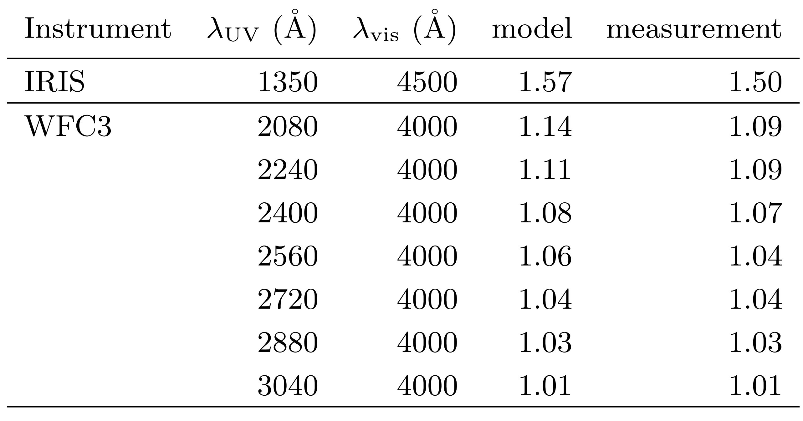
Putting it all together, we can use this sensor model to predict the gain ratios for IRIS and WFC3 that we discussed on the first two slides.
For IRIS, we can see that the team measured the gain ratio at 1350 angstroms to be 1.5 and we predicted that ratio to be 1.57, which is much closer than the original prediction of 2.
Similarly, the measured gain ratio for WFC3 at 2080 angstroms was 1.09 and we predicted 1.14, which is again much closer than their prediction of 1.7 at this wavelength.
Affected Instruments
AIA
94 Å
1600 Å
IRIS
1330 Å
1400 Å
MUSE
108 Å
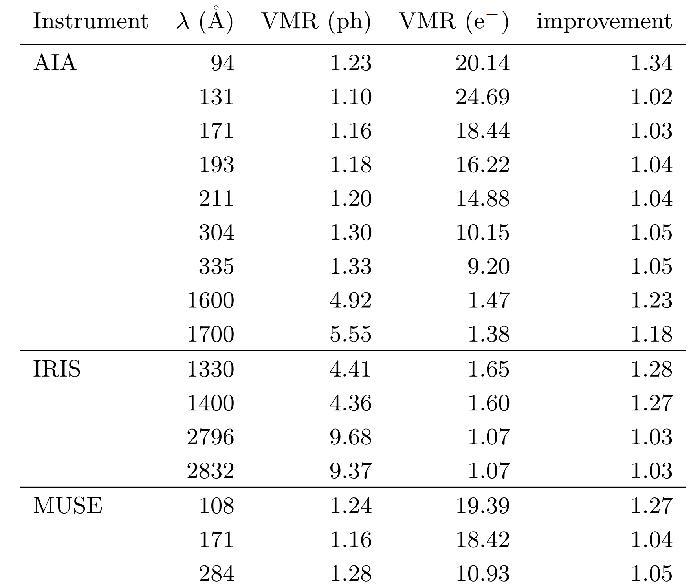
We can also use this sensor model to predict the SNR improvement we can expect for other ultraviolet observatories.
For example, the 94 angstrom channel of NASA’s Atmospheric Imaging Assembly, or AIA, is predicted to be 35% better than expected.
Also the 108 angstrom channel of the upcoming Multi Slit Solar Explorer, or MUSE, is predicted to be 27% better than expected.
Conclusions
Partial charge collection is responsible for discrepancy in IRIS and WFC3 noise statistics
Charge spreading is less important
The model predicts better SNR in some wavelengths than expected from the simple model
Results affect AIA, IRIS, WFC3, and MUSE.
Code provided in our optika Python package.
Published on PyPI
In conclusion, we found that partial charge collection, not charge spreading, explains the discrepancy in the IRIS and WFC3 noise statistics.
Since partial charge collection results in more measured photons, our model predicts that the SNR is better in some wavelengths than expected from the simple model.
Our results affect the measurement uncertainty of many ultraviolet astronomical observatories such as AIA, IRIS, WFC3, and MUSE.
A reference implementation of our model is implemented in Python and published on the Python Package Index as optika.